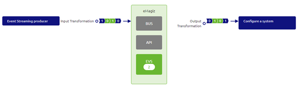
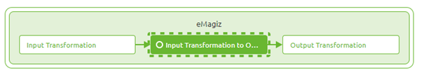
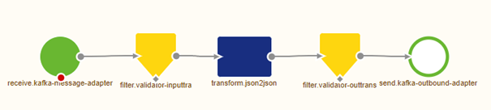

microlearning/intermediate-configuring-emagiz-event-streaming-creating-a-event-processor-with-transformation
Intro
Creating an event processor with transformation
In this microlearning, we will focus on creating the event processor in eMagiz for what we call a transformation case. With the help of such an event processor, you can easily transport, filter, and transform data between two topics.
Should you have any questions, please contact academy@emagiz.com.
- Last update: March 19th, 2021
- Required reading time: 6 minutes
1. Prerequisites
- Intermediate knowledge of the eMagiz platform
- An Event Streaming License
- Knowledge of the Event Streaming Pattern
- Followed the crash course on Event Streaming
2. Key concepts
This microlearning centers around creating an event processor with transformation. By event processor we mean: A flow within eMagiz that consumes data from one topic and transports the data to another topic. In between, you have the option to filter or transform the data (i.e. event) By transformation we mean: A method to ensure that the data structure of the input can be changed towards a specific output data structure
To create a event processor with transformer we need to have designed an event processor and the accompanying transformation. Lucky for us we just did that in the previous microlearning.
Theory
3. Creating an event processor with transformation
An Event processor is a flow within eMagiz that retrieves data from one topic (the so-called input topic) and transports the data to another topic (the so-called output topic). During the transport of the data, you can transform the event or filter out events that don't fit your criteria. In this transformation scenario we will transform the data between the input and the output to ensure the proper data structure for our output.
3.1 Determine Event Processor Design
The first step of creating your event processor is determining whether you have already designed an event processor. When you have established which event processor that you have designed needs to be transferred to the Create phase you can continue. For this microlearning, we assume that the event processor is already designed.

3.2 Add integrations
The first step is to add the integration to the Create phase of eMagiz. This process is the same for each pattern (Messaging, API Gateway, Event Streaming). So simply navigate to the Create phase and select the button Add integrations (located in the left bottom of the screen).

In here you select at least one of the topics to go to Create. eMagiz is smart enough to automatically transfer the other as well. You can always select them both, that will work also. After you have pressed Save Selection and everything went to plan you will see a pop-up similar to the one that is shown below

Press the button called Go to Create to get back to the Create overview.
3.3 The Create overview
In the overview of the Stream pattern that is presented, you can zoom in on the event processor to see what the input and output topic of the event processor is.

3.4 Event streaming flow
From here we can navigate to the flow by double-clicking on the event processor or via the context menu (accessible via a right mouse click). When you open the flow eMagiz will present you with something as depicted below. A simple flow with an input,an output, a transformation and two validation components. This flow is responsible for the following actions:
- Consume data from input topic
- Validate structure of incoming data
- Transform data between input and output
- Validate result of transformation
- Produce data on output topic

Assuming that the transformation needs no changes based on what you have created in Design, the only thing left for you to do is to press Stop Editing as eMagiz has already created the complete flow for you.
If you do need to make a change to the transformation you can do so with the guidance from previous microlearnings. When you are finished press Stop Editing and create a new version with a good description, ready to be deployed.
You have now successfully created an event processor that is capable of transforming data between the Input Topic and the Output Topic.
Practice
4. Assignment
Create an Event processor between an input and output topic within your (Academy) project. This assignment can be completed with the help of the (Academy) project that you have created/used in the previous assignment.
5. Key takeaways
- An event processor transports data between an input and an output topic
- When you use the transformation functionality on top of the event processor you can manipulate the structure of your output based on the requirements
- In eMagiz, you can easily create an event processor by using the Add integrations functionality to transfer the event processor from Design to Create
- eMagiz autogenerates the flow. The only user action that is needed is to verify the transformation, adjust if needed, and when satifisfied press Save
Solution
6. Suggested Additional Readings
If you are interested in this topic and want more information on it please read the release notes provided by eMagiz that accompany the eMagiz Mendix Connector version you have selected.
7. Silent demonstration video
This video demonstrates how you could have handled the assignment and gives you some context on what you have just learned. Disclaimer, you only see the eMagiz part but if you follow the above steps you are good to go!